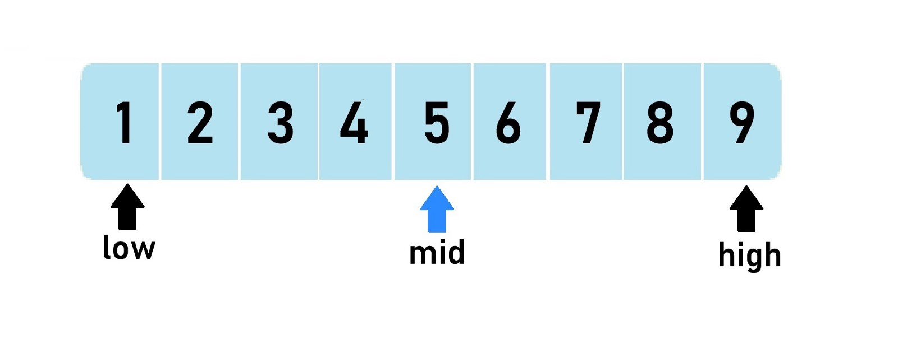

BINARY SEARCH

Binary search algorithm process:
- Find the middle item in the list: (n+1) / 2
- If this is your item, stop the search.
- If not, identify whether the item you are looking for is greater than or less than the middle item. If the item is greater than the middle item, get rid of the first half of the list. Do the opposite if the item is less than the middle item.
- Repeat steps 1-3 with your new list. Keep repeating until you find the item you are looking for.
Key characteristics:
- Only works in ordered lists
- Is generally quite fast